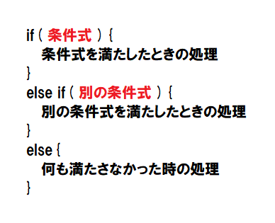
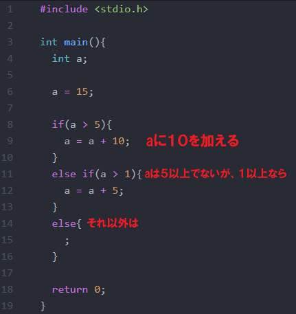

条件式A && 条件式Bは、a < 3 && b > 11のように、上から6番目までの条件式を組み合わせますぐさ。aの範囲が、10から55と指定したい場合、a >= 10 && a <= 55、10以上かつ55以下という風に書きますぐさ。
プログラミングをする上で必ず必要なのが、条件分岐です。条件分岐は、ある数がある数よりも大きい時にのみこの処理をする。というものです。
例えば、数 a が0以上ならば何か処理を行って、そうでなければ何も行わない。といった感じです。
この条件分岐をするには、 if 文と呼ばれるものを使います。
まず一番上に条件式を書き、それが満たさなかったら次の条件式を判定し、というのを繰り返して、すべて満たさなかったら最後の処理をする。という感じです。
では、この条件式はどう書けばいいのでしょうか。実はある程度型が決まっていて、以下の8つしかありません。
| a > b | a が b より大きい時 |
|---|---|
| a < b | a が b より小さい時 |
| a >= b | a が b より大きい時 ( a と b が等しい時も含める) |
| a <= b | a が b より小さい時 ( a と b が等しい時も含める) |
| a == b | a と b が等しい時 |
| a != b | a と b が等しくない時 |
| 条件式A && 条件式B | 条件式Ａと条件式Ｂの両方満たすとき |
| 条件式A || 条件式B | 条件式Ａと条件式Ｂのどちらか一方を満たすとき |
条件式A && 条件式Bは、a < 3 && b > 11のように、上から6番目までの条件式を組み合わせますぐさ。aの範囲が、10から55と指定したい場合、a >= 10 && a <= 55、10以上かつ55以下という風に書きますぐさ。
これらを組み合わせて条件式を作ります。
以下は、整数 a が、5以上の場合10を加算し、3以上の場合は5を加算し、それ以外の場合は何もしないプログラムです。
a に15が代入されてるので、一番上の条件式を満たし、aに10が加算されます。最後のelseは、実は省くことが出来、書かなくても構いません。
いかがでしたが。このようにif文を使う事によって、状況に応じて処理を分ける事ができるんです。
トップページへ